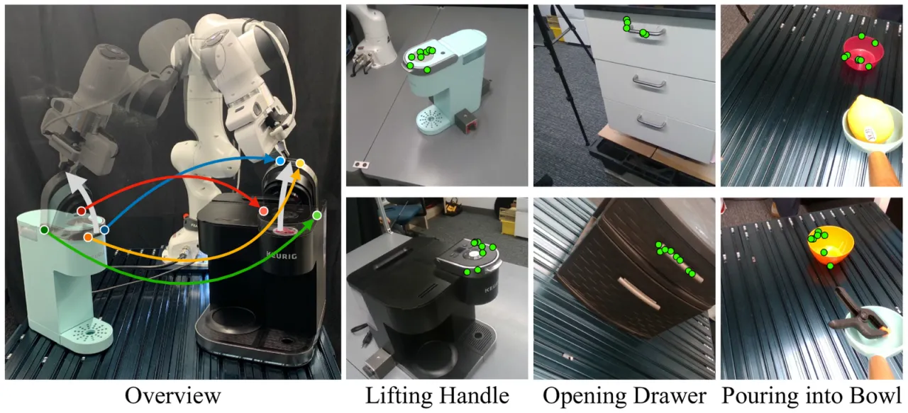
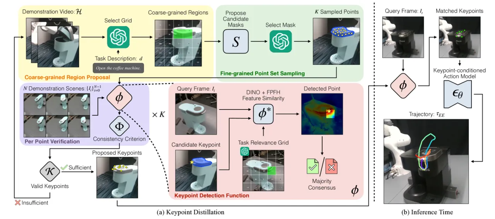
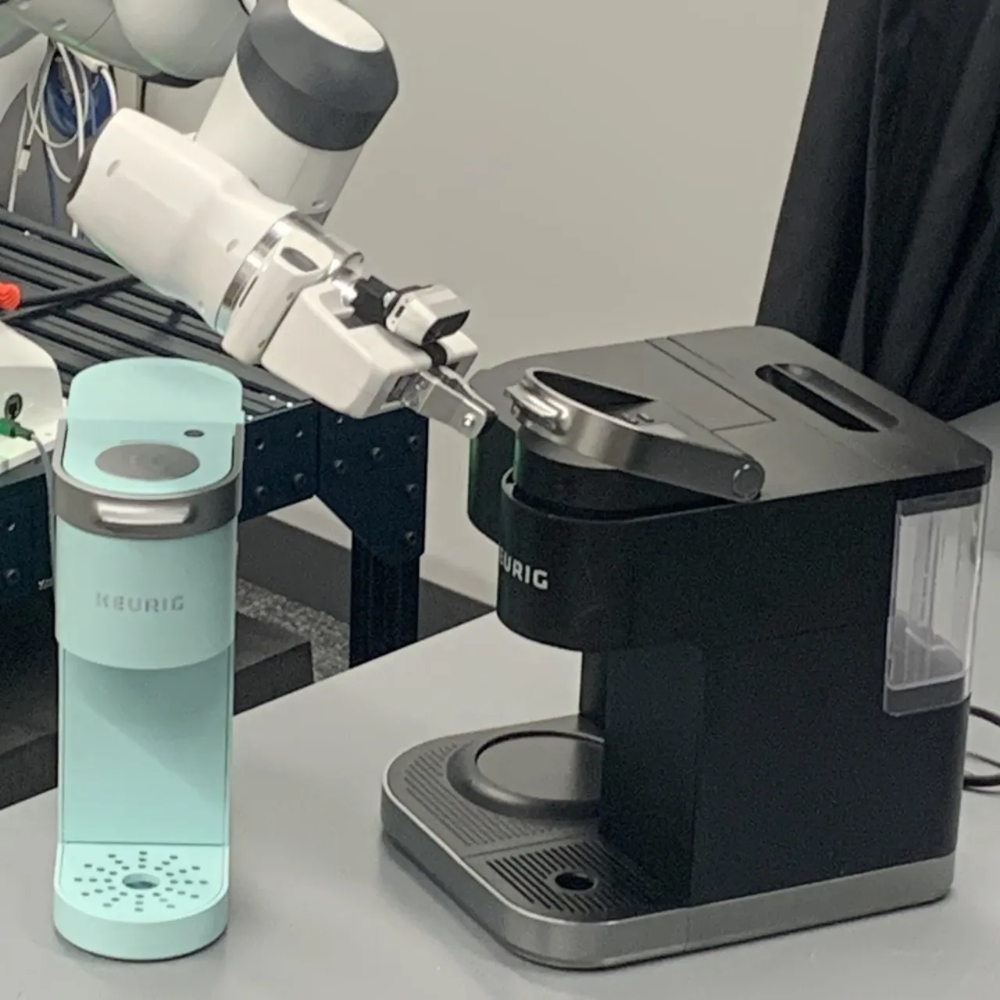
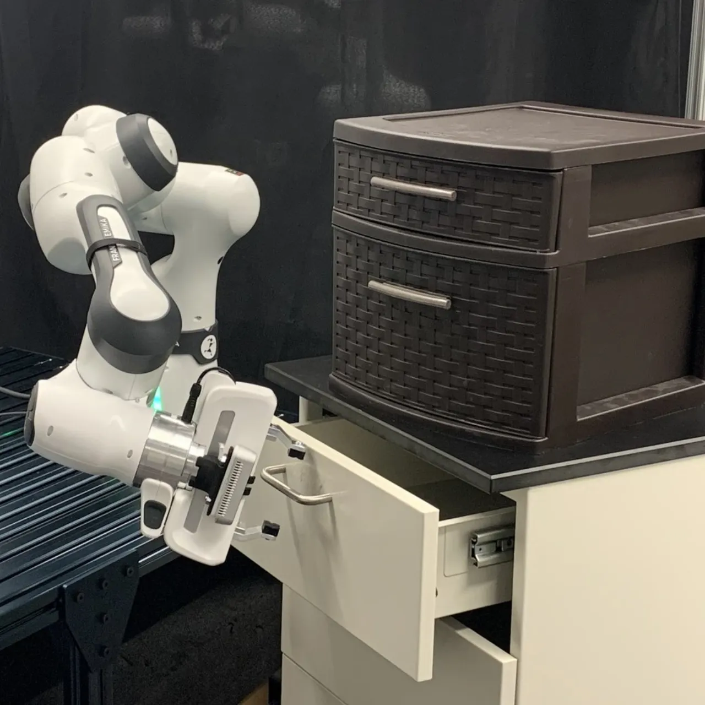
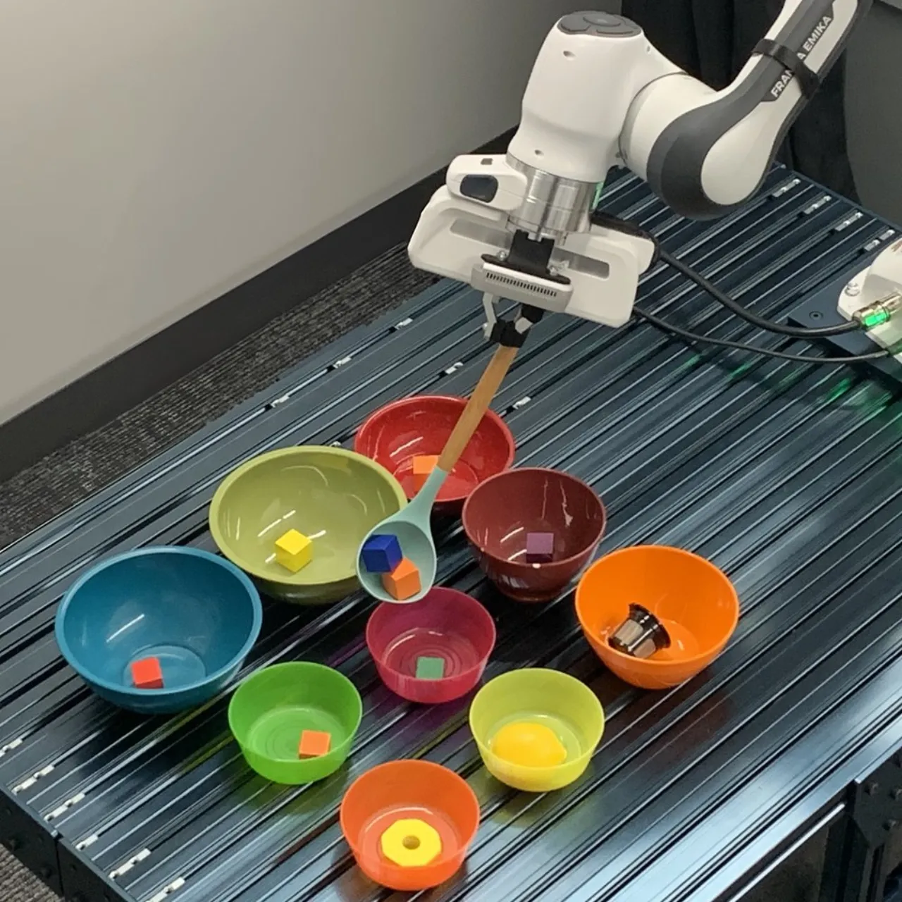
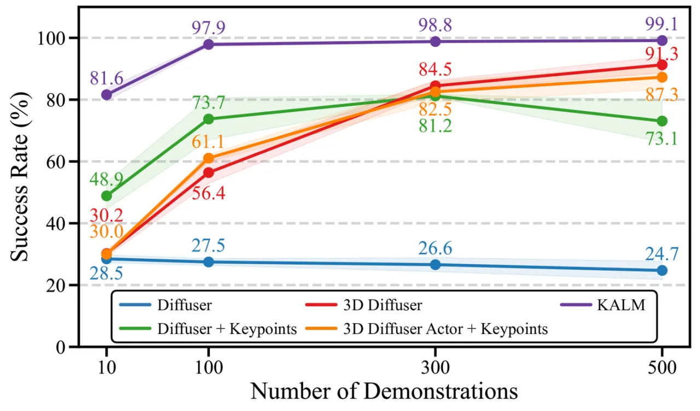

机器人要在物体位姿、相机视角、物体实例都变化的场景里从少量示教学会操作，很难。KALM 让大型预训练视觉-语言模型（VLM）自动提议 keypoints，再用少量机器人示教验证其一致性，从而蒸馏出「任务相关 + 跨实例一致」的稀疏关键点；策略在以这些 keypoints 为中心的 object-relative 坐标系里预测动作，仅 10 条示教、无需额外人工标注，即可泛化到新视角与新物体。
keypoint（关键点）是一种简洁而有力的操作表征：把动作锚定到少数几个语义点上，可以天然对背景、绝对位姿与视角变化保持不变。但过去要么靠专家手工设计 keypoints、部署时还要额外采数据与人工标注；要么直接用大模型无监督地抽点——论文指出这类做法「error-prone」，与机器人任务约束不对齐。
好的 keypoint 抽象必须同时满足两点：task relevance（关键点足以支撑任务完成）与 cross-instance consistency（关键点在不同视角、位姿、物体实例间都能被稳健地识别）。

KALM 分两阶段：(a) Keypoint 蒸馏——迭代地由 VLM 提议候选区域、用示教数据做一致性验证，筛出稳健关键点；(b) keypoint-centric 策略——在以关键点集合中心为原点的 object-relative 坐标系里，用扩散模型预测末端执行器轨迹。

输入示教视频序列 ℋ 与任务描述 d（如 “open the top drawer”）。VLM₁ 在叠了网格（grid overlay）的首帧图像上、以 zero-shot chain-of-thought 推理定位任务相关区域；随后 SAM（Segment Anything Model）在候选区域生成物体部件的 masks，VLM₂ 再从中挑出最相关的一个 mask；最后在该 mask 内的 3D 点上做 Farthest Point Sampling（FPS），得到 Nc 个几何显著、「visually distinct and thus tend to be consistently identifiable」的候选点。
给定候选关键点 k 与新图像 I，φ 搜索使特征相似度最大的位置 p，融合 DINO 视觉特征（权重 λ₁=0.75）与 FPFH 三维几何特征（λ₂=0.25），并用 local group-based matching（半径 r=0.02m 内采 N′=8 个邻居）提升鲁棒性；若匹配不到则返回 Null。
对每个候选点，用其在所有示教上被成功检出的比例打分 Φ(k) := (1/N)∑𝟙[φ(k,Ii) ≠ Null] ≥ 1−δ（δ=0.3）；当满足 ∑kΦ(k)/|𝒦FPS| ≥ γ 才算成功，否则丢弃并重新提示 VLM。这一步是把「大模型的猜测」变成「机器人可信赖的关键点」的核心。
策略骨干为 Diffuser（基于扩散的轨迹模型）：输入稀疏关键点位置 pk 及其 DINO+FPFH 特征，输出末端执行器轨迹 τEE（H=48 个位姿，每个 10 维：3D 位置 + 6D 旋转 + gripper）。关键设计是在 object-relative（以关键点集合中心为原点）坐标系里预测动作——从而对背景、视角变化以及物体/相机绝对位姿保持不变，并促成跨实例泛化。推理时：φ 定位关键点 → Diffuser 去噪生成若干候选轨迹 → 双向 RRT 运动规划检查可达性 → 执行第一条可行轨迹。
在 Meta-World 仿真（5 个任务）与 真实 Franka 机械臂（3 个任务）上评测，重点看在随机化相机与物体位姿、以及未见过物体（cross-object）下的泛化。每个任务仅 10 条示教。
基线 “w/o. Verification”：跳过一致性验证，直接让 VLM 选 Nk=8 个关键点。可见验证步骤对稳健性至关重要。
| 任务 | KALM · View | KALM · Cross Obj. | w/o. Verif. · View | w/o. Verif. · Cross Obj. |
|---|---|---|---|---|
| Lifting the handle（抬咖啡机把手） | 9/10 | 6/10 | 1/10 | 0/10 |
| Opening the top drawer（开抽屉） | 6/10 | 7/10 | 2/10 | 0/10 |
| Pouring into a bowl（倒入碗中） | 8/10 | 6/10 | 6/10 | 2/10 |



硬件：Franka Research 3 机械臂 + 手腕 RealSense D435i 相机。KALM「demonstrates strong performance under view changes」并能泛化到 diffusion 训练时未见过的物体。
Meta-World 5 任务（DrawerOpen / DrawerClose / ButtonSide / ButtonTop / LeverPull），随机化相机（elevation∈[0,π/2]、azimuth∈[−π/2,π/2]、distance∈[1.5,2]）与物体位姿。基线含 Diffuser（仅 RGB）、3D Diffuser Actor（RGBD+transformer），以及「+ manual keypoints」的消融。论文：「Our method consistently outperforms these baselines, demonstrating that keypoints serve as an effective abstraction.」

论文指出，依赖预训练模型「one-shot solutions」的方法「are prone to errors produced by these models」。KALM 正是用「示教验证 + 重新提示」来缓解这一问题，但候选质量仍受 VLM/SAM/DINO 能力上限约束。
方法建立在「关键点跨视角/实例可被 φ 稳健检出」之上；当目标部件被遮挡、无纹理或几何高度对称、DINO/FPFH 特征退化时，φ 可能返回 Null，进而无法定位动作坐标系。
评测集中在抽屉/按钮/拉杆/抬把手/倾倒等以单一物体为中心的操作；对多物体交互、长程/接触丰富的动态任务，object-relative 单坐标系表征与本文实验尚未覆盖。